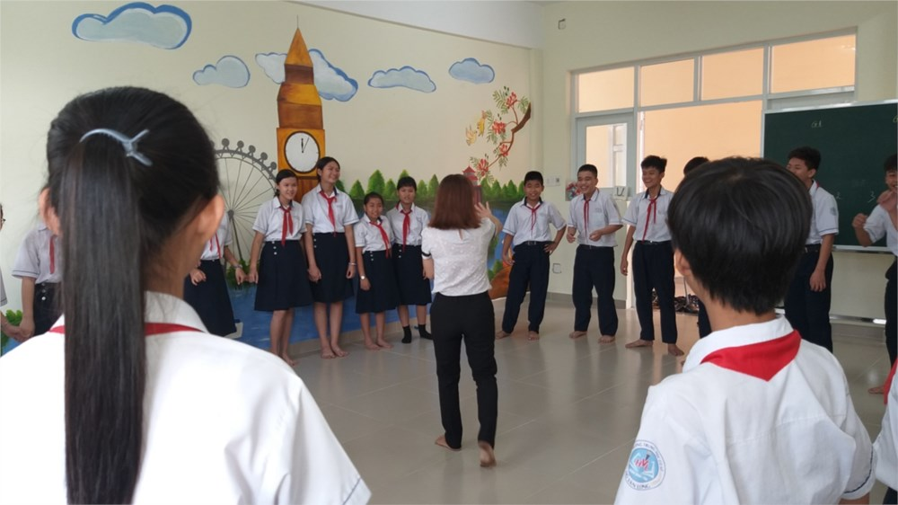

Câu Lạc Bộ Tiếng Anh - Sân chơi đã trở lại
Hân hoan chào đón các bạn quay trở lại với Câu lạc bộ Tiếng Anh của trường chúng ta trong tháng 11. Tháng 11- tháng với nhiều hoạt động học tập và vui chơi diễn ra nhằm kỉ niệm 37 năm ngày Nhà giáo Việt Nam 20-11, CLB chúng ta cũng sinh hoạt không kém phần hào hứng trong ngày sinh hoạt vừa qua đấy các bạn. Trước tiên các thành viên CLB khá bất ngờ khi bước vào căn phòng quen thuộc nhưng sao hôm nay lại đẹp như thế, các bạn cứ ngỡ mình đang đến thăm các quốc gia đâu đó trên thế giới…, các bạn đến sớm tranh thủ lấy hình ảnh xinh đẹp ngay.
Lần này, theo qui định của BTC, các bạn bước vào phòng sinh hoạt không được trao đổi với nhau bằng Tiếng Việt, thoáng chút ngại ngùng cũng trôi qua thật nhanh, chỉ vài phút sau các bạn thật phấn khích huyên thuyên sử dụng Tiếng Anh thật vô tư. Đúng đấy các bạn ơi, cứ mạnh dạn và tự tin, đừng quá lo lắng là mình đang sử dụng đúng cấu trúc, đúng từ ngữ hay không vì chúng ta đang nói chuyện với nhau, không cần quá chú trọng đến yếu tố ngữ pháp. Hy vọng các bạn sẽ ngày càng tự tin hơn nha. Hoạt động đầu tiên, các bạn được sinh hoạt tập thể với hình thức chuyền bóng và thực hiện theo yêu cầu BTC, vui nhất là khi được yêu cầu kể tên các Thầy Cô trong trường cùng với môn thầy cô đó giảng dạy, các bạn tranh nhau giành bóng kể trước vì lo sợ mình không nhớ môn dạy của các thầy cô, ngoài ra cũng có những chủ đề quen thuộc như hoạt động thể thao, môn học, phim ảnh,… tiếng cười vui vẻ của các bạn làm tan đi bao e ngại buổi ban đầu.

Tiếp theo, các bạn sẽ được các Thầy cô trong tổ Tiếng Anh phân nhóm theo các màu sắc: đỏ, vàng, xanh lá, trắng, xanh dương tương ứng với các chủ đề như: môn học, thể thao, phim ảnh, hoạt động hằng ngày,… các bạn chia thành từng nhóm thảo luận với sự trợ giúp của các Thầy cô được phân về cho mỗi nhóm; ồn ào, náo nhiệt nhưng tràn đầy không khí Tiếng Anh.
Hết thời gian thảo luận các bạn sẽ được mời trình bày theo con số lựa chọn ngẫu nhiên, bao e dè ban đầu dấn biến mất vì tinh thần đồng đội, vì sợ nhóm mình bị mất điểm thế là bạn cố gắng diễn đạt, diễn đạt và diễn đạt. Hiệu quả thật đấy các bạn.
Hoạt động tiếp theo cũng không kém phần hấp dẫn đó là mỗi nhóm sẽ vẽ hình ảnh có liên quan đến chủ đề và chịu sự chất vấn của các nhóm bạn còn lại, kỹ năng hùng biện của các bạn nâng lên rõ rệt.
Sẽ còn rất nhiều hoạt động bổ ích hứa hẹn chờ đợi các bạn trong những lần sinh hoạt tiếp theo, hẹn gặp lại các bạn vào lần sinh hoạt khai xuân đầu năm 2020.Tạm biệt nhé và chúc các bạn đạt được kết quả tốt trong kì kiểm tra học kì 1 sắp đến.Hẹn gặp lại….